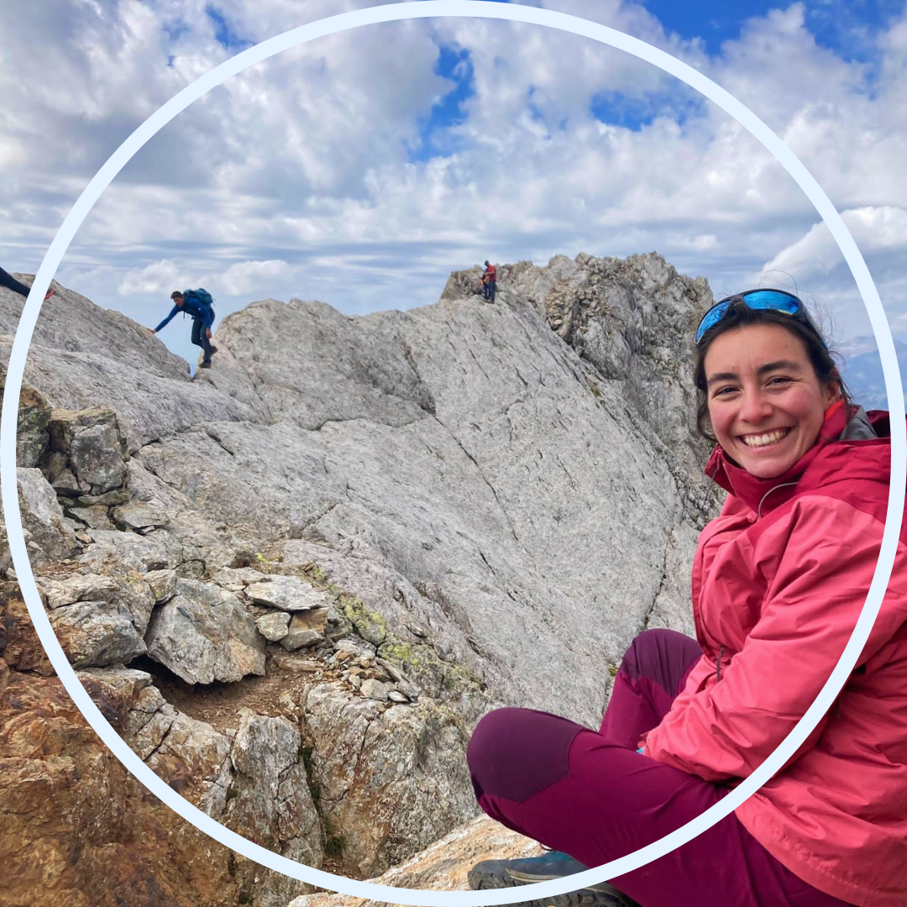
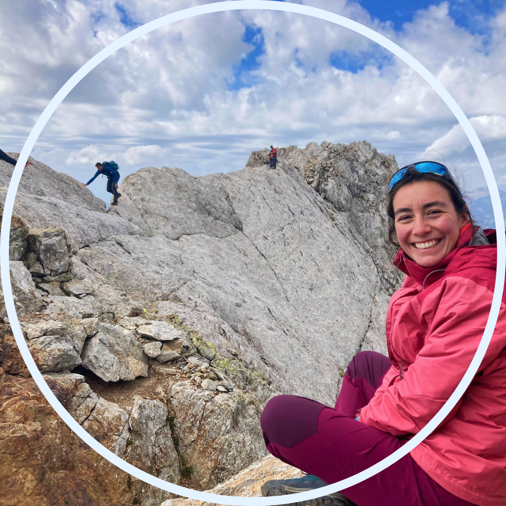

Senderisme sense fer nit
Bones! Benvingudes!
No tinc molt clar quines sortides afegir aquí, però de moment entraré les que no es dorm a mitja ruta.
Planes de Son
- Zona: Parc Nacional d'Aigüestortes.
- Punt de sortida: Planes de Son, dormim a MónNatura Pirineus.
- Època: estival
- 25 Km, 1.500m de desnivell.
- Track a Wikiloc.
26 de juny del 2023. A continuació. És el 1r cop que faig tant de desnivell. Toma que forta que estic!
Vallibierna i Pic de Culebres, fent el Pas de Cavall
- Zona: Benasque, Huesca.
- Punt de sortida: apraquem al parking l'embassament.
- Època: estival.
- Escriure aquí km i desnivell
- Track a Wikiloc.
10 de setembre del 2023. 2n 3000m que faig.
El Pedraforca
- Zona: Pre-Pirineus
- Punt de sortida: apraquem al parking de ?
- Època: estival.
- Escriure aquí km i desnivell
- Track a Wikiloc.
17 de setembre del 2023. 2n cop que faig el Pedraforca amb els markers.

 
